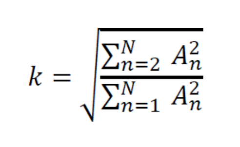
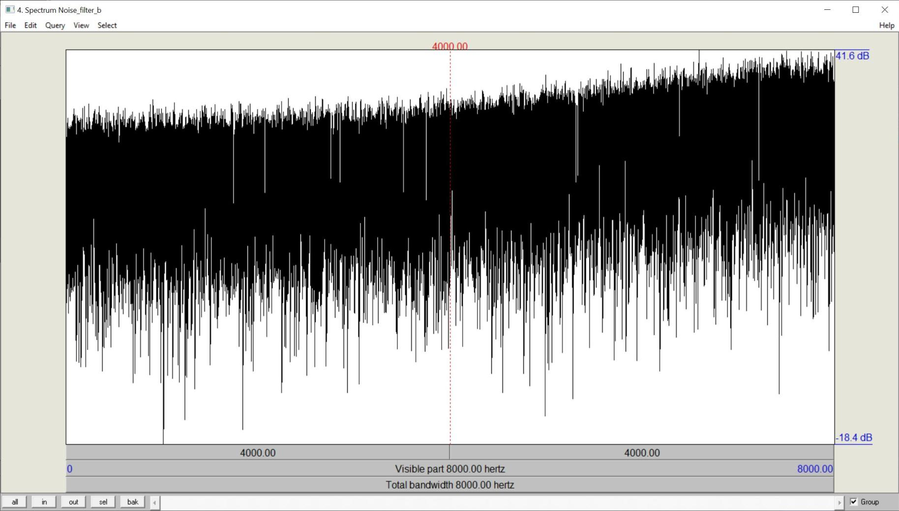
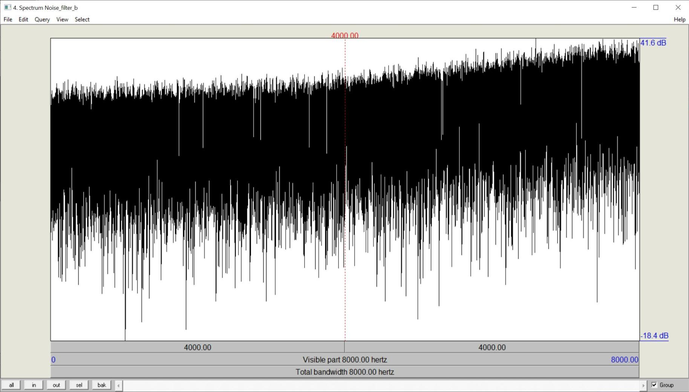

Aufgabe 1: Klirrfaktor
1A Clipping
Zunächst sollt ihr eure Musikdatei um die Verstärkung 3, 6 und 9dB verstärken. Dies
realisiert ihr durch Multiplikation der Abtastwerte mit dem linearen Verstärkungsfaktor F, den
ihr zunächst aus der Verstärkung in dB berechnen müsst.
Dabei wird es bei hoher Verstärkung zwangsläufig zu einem sogenannten Clipping kommen, d.h.
das Produkt aus der Originalamplitude und dem Verstärkungsfaktor ist betragsmäßig größer als
der maximal darstellbare Amplitudenwert (bei 16 bit < -32768 bzw. > 32767). In diesem Fall
muss dafür gesorgt werden, dass der resultierende Wert auf genau -32768, bzw. 32767 gesetzt
wird. Clipping ist akustisch als immer stärker werdende Verzerrung des Musiksignals
wahrnehmbar.
Musikdatei mit Verstärkung 3dB
Musikdatei mit Verstärkung 6dB
Musikdatei mit Verstärkung 9dB
Code main:
try {
short[] downsampledAudio = new short[readWavFile.sound.length];
int db = 20;
double a = Math.pow(10, db/20);
for (int i = 0; i < samples; i++) {
downsampledAudio[i] = clamp(a * readWavFile.sound[i]);
}
WavFile.write_wav(outFilename, numChannels, numFrames, validBits, sampleRate, downsampledAudio);
} catch (Exception e) {
System.err.println(e);
e.printStackTrace();
}
Code clamp:
static short clamp(double d) {
return (short) Math.min(Short.MAX_VALUE, Math.max(Short.MIN_VALUE, d));
}
1B Verzerrung wahrnehmbar
Bei welcher Verstärkung wird eine Verzerrung wahrnehmbar?
Ab 12dB wird eine Verzerrung wahrnehmbar
1C Klirrfaktor k
Ihr sollt nun die 1kHz-Sinusschwingung um 6, 9 und 12 dB verstärken und den
resultierenden Klirrfaktor k berechnen. Der Klirrfaktor lässt sich aus dem Frequenzspektrum
berechnen (GRAM: FFT Size 512, Praat: Analyse Spectrum …, alle sichtbaren Obertöne für die
Berechnung berücksichtigen!).
Klirrfaktor für 6dB
Klirrfaktor für 9dB
Klirrfaktor für 12dB
Berechung
Mit Praat haben wir die Audio Dateien ausgelesen mit folgendem Ergebnis.Mit der Formel für den Klirrfaktor k:
haben sich die folgenden Werte ergeben.
 
